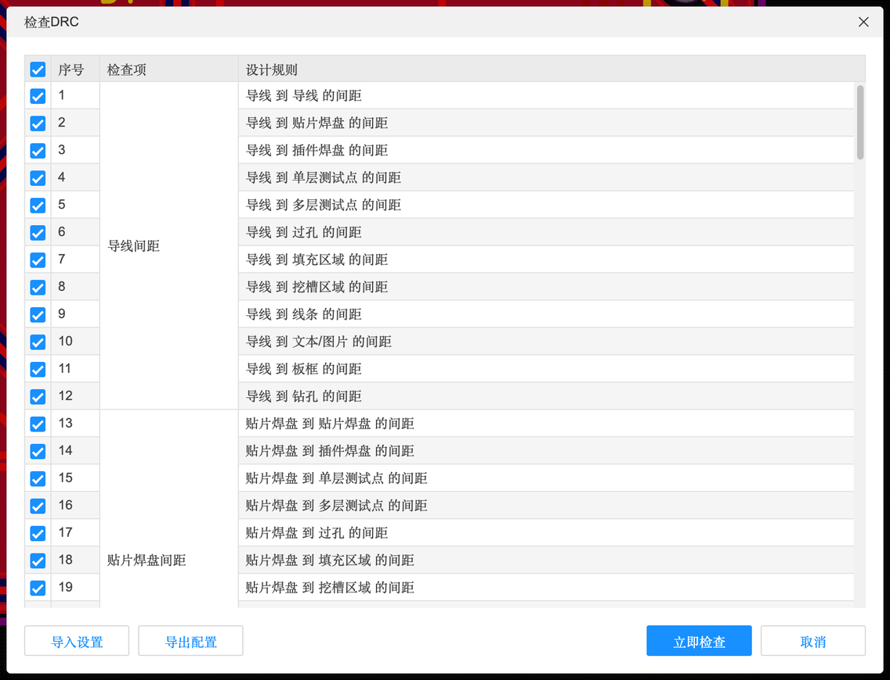
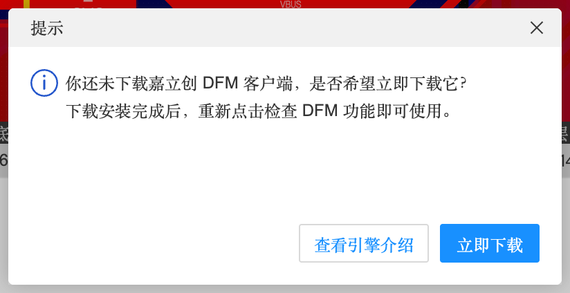
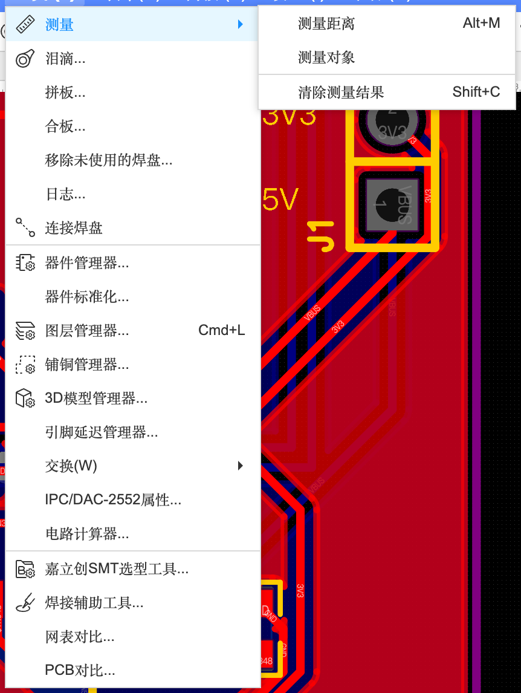
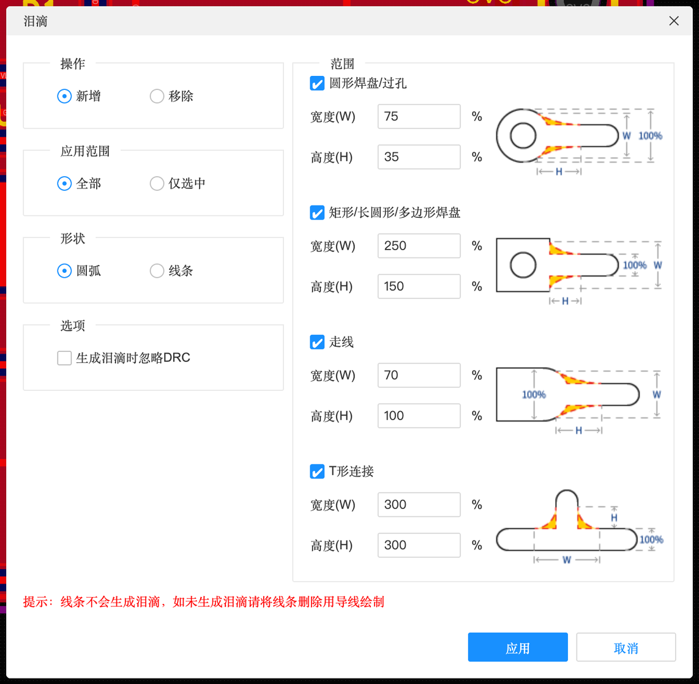
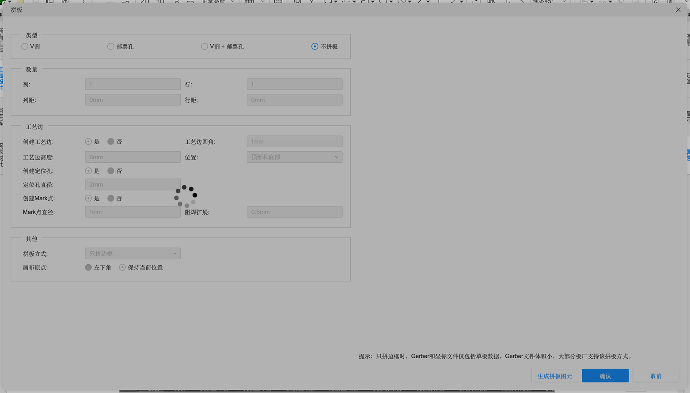
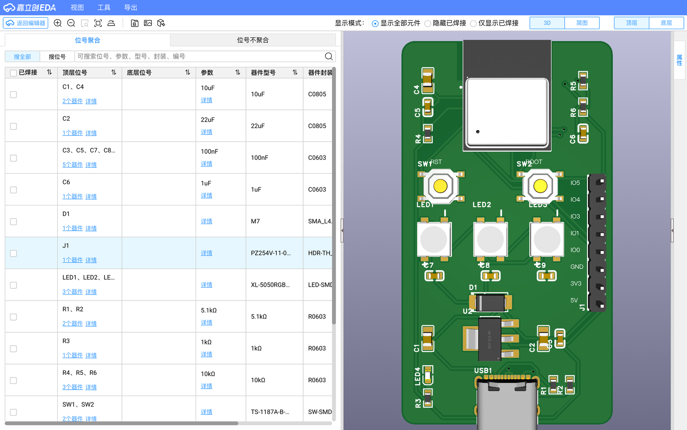
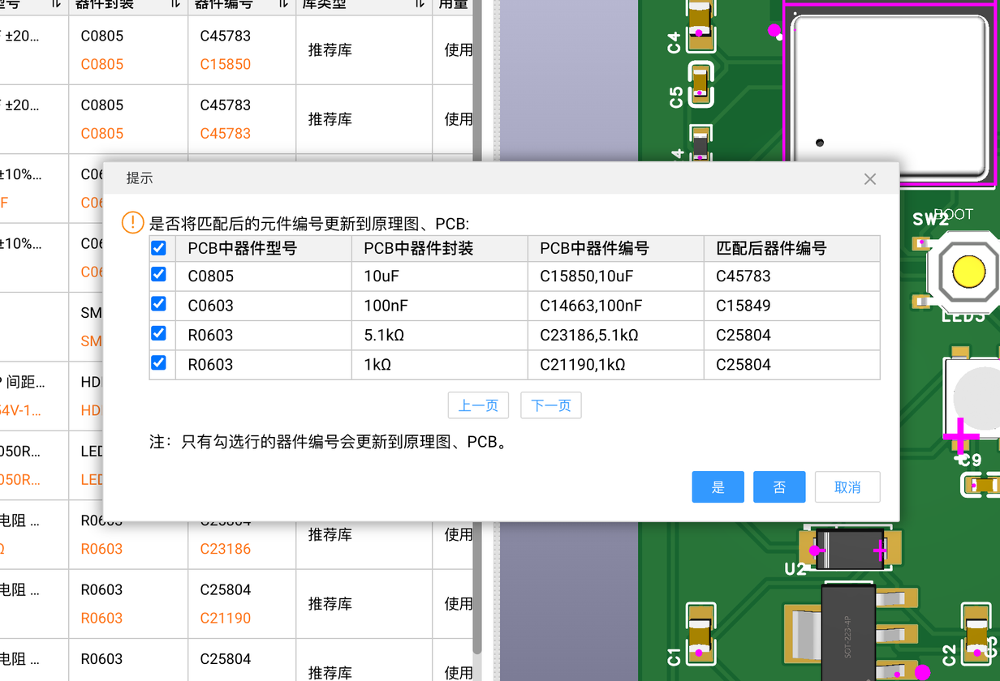
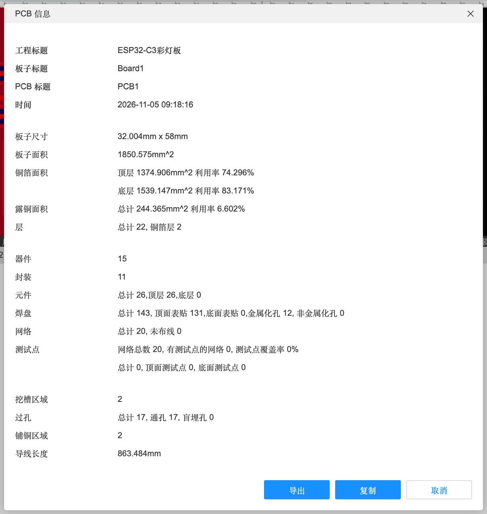
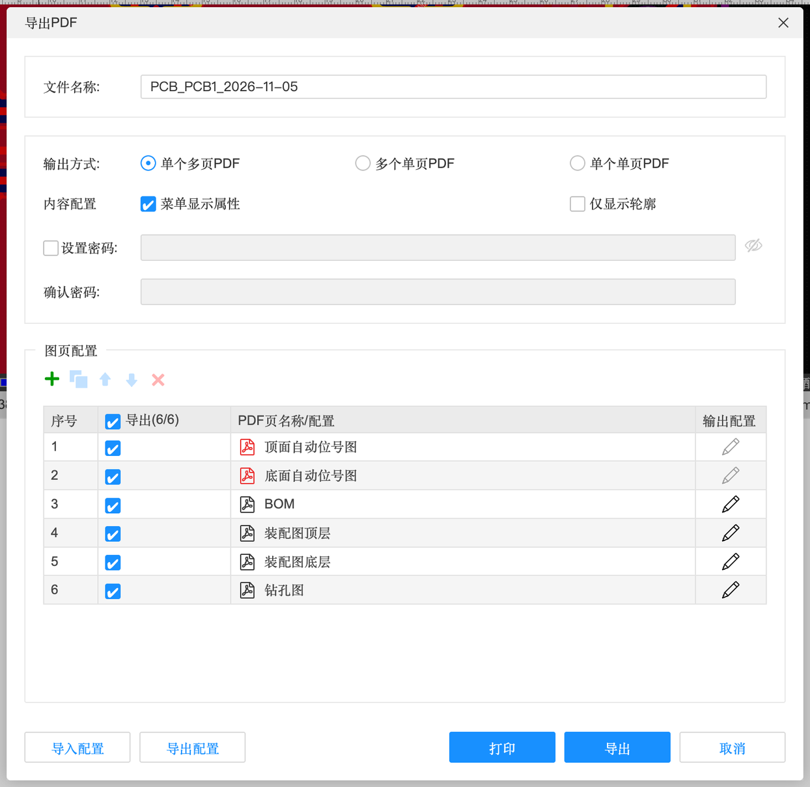
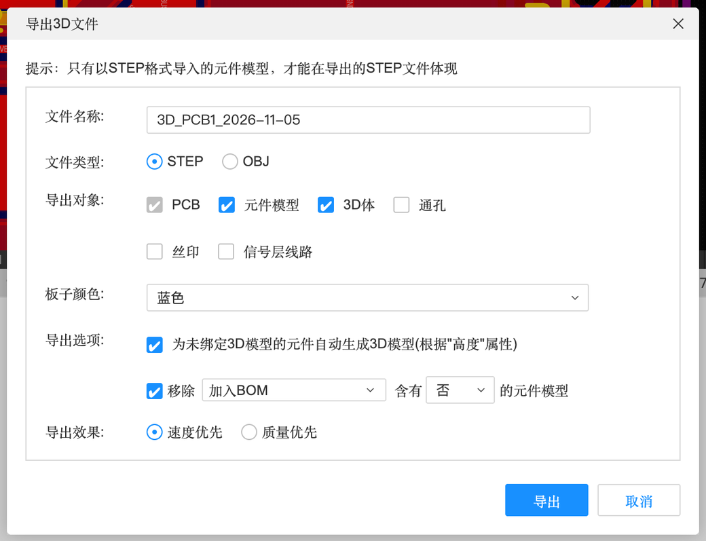

6.4 检查、同步与输出
画完板子，下单之前：检查（DRC、DFM、测量）、和原理图对一遍、补泪滴，再导出各种文件。还有拼板、焊接辅助、SMT 选型几个实用工具——其中 SMT 选型工具有一个实测会把电路改坏的坑，一定要看。
检查#
检查 DRC 与自定义 DRC#
「设计」→「检查DRC」按设计规则检查整板（A-9）。「检查DRC(自定义)…」可以只勾选你关心的检查项：

- 「实时DRC」（设计菜单，可勾选）：边画边检查，违规的地方立刻标出来
- 「清除错误」：清掉画布上的 DRC 标记
- DRC 错误的样式、显示大小在「设置」→「PCB/封装」→「显示」里改（3.1）
本教程的猫头创作板跑 DRC 只报了一条“网表错误：PCB 与原理图网表不一致”——因为练习工程的原理图里有两个元件没导入到这块板子。外形、挖槽、丝印都没有报错。
检查 DFM#

DRC 查的是“符不符合你设的规则”，DFM（可制造性检查）查的是“工厂实际能不能做好”，比如酸角、细缝、孔离板边太近。实测点击后先显示“正在进行 DFM 连接尝试…”，十几秒后提示“你还未下载嘉立创 DFM 客户端，是否希望立即下载它？”。需要本机安装客户端，本教程没有安装。
测量#

泪滴#

泪滴是在导线和焊盘/过孔连接处加一块“过渡”铜，形状像一滴眼泪。作用是让连接处更结实，钻孔有一点偏差时也不容易断线。一般板子不加也行；画完、准备下单前一键加上更保险。
| 选项 | 含义 |
|---|---|
| 操作 | 新增 / 移除泪滴 |
| 应用范围 | 全部 / 仅选中 |
| 形状 | 圆弧 / 线条 |
| 生成泪滴时忽略 DRC | 勾选后即使和别的东西挨得近也照样加 |
| 圆形焊盘/过孔、矩形/长圆形/多边形焊盘、走线、T形连接 | 每种情况的泪滴宽度(W)、高度(H)，按百分比设置 |
| 提示 | “线条不会生成泪滴，如未生成泪滴请将线条删除用导线绘制” |
移除未使用的焊盘#
工具 → 移除未使用的焊盘：多层板内层上没有连线的焊盘环可以去掉。界面提示“该功能仅对内层的信号层生效，顶层、底层和内电层的焊盘不会移除”——两层板用不到。
与原理图同步#
| 功能 | 位置 | 说明 |
|---|---|---|
| 从原理图导入变更 | 设计菜单 ⌥I | 原理图改了以后把变化带过来（B-3 换 LED4 时用过） |
| 更新 PCB 到原理图 | 设计菜单 | PCB 里改了位号等，同步回原理图 |
| 分配位号… | 设计菜单 | 按板上的位置重新编号（让位号按板子从左到右排） |
| 网表对比 / PCB 对比 | 工具菜单 | 对比两份网表 / 两块 PCB 的差异 |
| 交叉选择 | 设计菜单 | 原理图和 PCB 互相定位 |
预览、实用工具与输出#
拼板#

小板子（比如本教程的猫头）可以几块拼在一起生产，贴片时更省事。
| 选项 | 含义 |
|---|---|
| 类型 | V 割（板子之间刻一道 V 形槽，掰开）/ 邮票孔（一排小孔连着，掰开）/ V 割 + 邮票孔 / 不拼板。异形板（圆形、猫头）只能用邮票孔，V 割只能切直线 |
| 数量：列 / 行 / 列距 / 行距 | 拼几乘几、板子间距 |
| 工艺边 | 是否在拼板外围加一条辅助边（贴片机夹持用），圆角、高度、位置（顶部和底部） |
| 定位孔 / Mark 点 | 贴片机定位用的孔和光学标记，直径、阻焊扩展 |
| 拼板方式：只拼边框 | 提示“只拼边框时，Gerber 和坐标文件仅包括单板数据，Gerber 文件体积小，大部分板厂支持该拼板方式” |
| 画布原点 | 左下角 / 保持当前位置 |
| 生成拼板图元 / 确认 | — |
焊接辅助工具（交互式 BOM）#

自己手焊时的好帮手（「导出」→「交互式 BOM…」打开的是同一个界面）。左边列出每种元件（位号、参数、型号、封装），每行可以勾“已焊接”；顶部显示模式可选“显示全部元件 / 隐藏已焊接 / 仅显示已焊接”。焊一个勾一个，不会漏焊。左上角「返回编辑器」退出。
⚠️ 嘉立创 SMT 选型工具：推荐值可能是错的#
「工具」→「嘉立创SMT选型工具…」会把你的 BOM 和嘉立创库存匹配，每种元件给一个“推荐库”器件。本教程在案例 B 上实测：推荐并不是“等值替换”。
| 元件 | 原来的（正确） | 工具推荐的 |
|---|---|---|
| R1、R2（CC 下拉） | 5.1 kΩ（C23186） | 10 kΩ（C25804）——USB-C 下拉必须是 5.1k，换了充电器可能不供电 |
| R3（电源灯限流） | 1 kΩ（C21190） | 10 kΩ |
| C1、C4 | 10 µF（C15850） | 22 µF（C45783） |
| C3 等 100 nF | 100 nF（C14663） | 1 µF（C15849） |
点「返回编辑器」时会弹出提示：“是否将匹配后的元件编号更新到原理图、PCB”，列出上面这些替换：

PCB 信息#

案例 B 实测：板子 32.004 × 58 mm，面积 1850.575 mm²，顶层铜箔利用率 74.3%、底层 83.2%，元件 26 个（全在顶层），焊盘 143 个（贴片 131、金属化孔 12），网络 20 个。下单报价、写报告时用得上。
导出格式一览#
| 导出项 | 用途 |
|---|---|
| PCB 制板文件（Gerber）/ 坐标文件 / BOM | 下单生产（A-10） |
| ODB++ | 另一种制造数据格式，一些工厂更喜欢（对话框和 Gerber 一样有一键导出 / 自定义配置） |
| IPC-D-356A / 飞针测试文件 / 测试点报告 | 电气测试用 |
| 3D 文件 | STEP / OBJ，给 Fusion 360、SolidWorks 设计外壳 |
| DXF | 选择导出哪些层，给 CAD 软件（比如做激光切割的亚克力面板对位） |
| PDF / PNG | 打印、写文档；PDF 可以按页输出自动位号图、BOM、装配图、钻孔图 |
| 交互式 BOM | 焊接辅助（见上） |
| 自动布线（DSN） | 导给外部自动布线软件 |
| PADS / T/DISA 4001 | 跨软件 |

